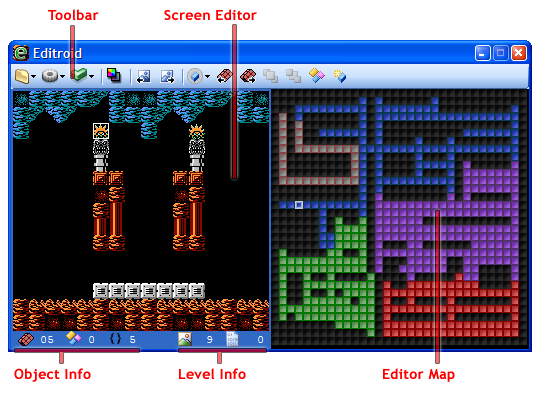

Screen Editor
The screen editor is the most important editor in
Editroid. It is incorporated into the main Editroid window. In the screen editor
you can move, modify, add, and remove the enemies, doors, and
objects in the screens that the game's world is constructed from. Each level has
its own set of screens.
Once you have selected a location on the map, the
screen found there will be displayed in the screen editor. You can expand the
window to show multiple screens. Select a window size under  Special
ToolsàGrid Size.
Special
ToolsàGrid Size.
Remember, screens are heavily recycled, and editing one screen will cause changes in multiple places in the map. You can change which screen is associated with each map location by using the Previous Screen and Next Screen buttons (or the page up and page down keys). Notice that the index of the screen being edited is shown on the bottom.
Objects may be moved by dragging them with the
mouse. (An alternative is to use the tab key to select the item you want to
move, using Ctrl+Tab to switch between enemies and objects. You may then use the
arrow keys to move the item.) The Palette
button (or the "p" key) changes which palette the selected object is
shown with. For enemies the difficulty of the enemy depends on the palette. When
objects overlap, if the colors don't look how you intend try holding shift and
clicking the palette button. Use the object type buttons ( )
or the plus and minus keys to cycle through enemy or object types. You can also
bring objects to the front or send them to the back (this can not be done with
enemies).
)
or the plus and minus keys to cycle through enemy or object types. You can also
bring objects to the front or send them to the back (this can not be done with
enemies).
The Object Management menu provides options to add and delete objects and enemies, as well as add/change doors. Initially there is no free memory to add new objects, but as you delete objects from screens you will see the amount of free memory () increase. Free memory is not shared between levels.